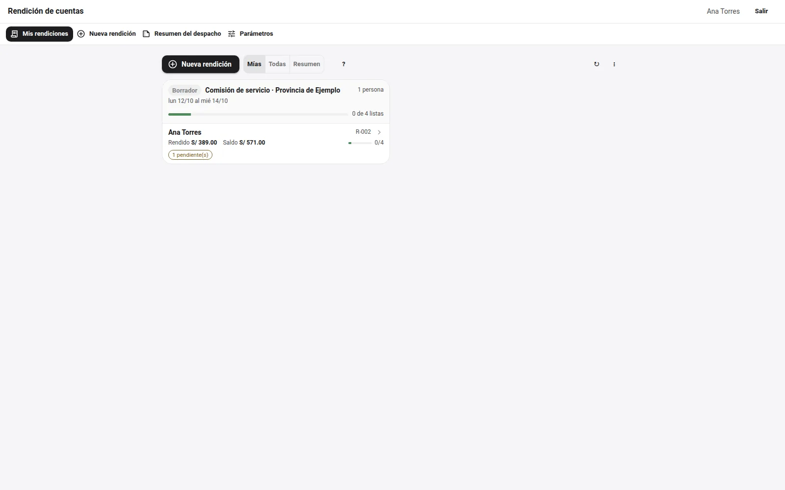

Comprobantes
Foto, PDF o texto pegado; con su tipo, su serie y su monto.
Software libre · AGPL-3.0 · parte de la plataforma Qillqa
Yupay lleva la rendición de cuentas de viáticos: la comisión y su movilidad, los comprobantes (también pegados desde un texto), los topes por día, la declaración jurada, la liquidación en Excel con las fórmulas del libro de referencia y los anexos en PDF con su propio marco LaTeX.
Yupay significa «contar» en quechua.

Recorrido
Las capturas son de la demo, con datos ficticios. Elige una pantalla.
Pruébalo
Marca los comprobantes que tienes: lo gastado contra el tope del día y lo que va a la declaración jurada, a la vista.
Un módulo de Tiqsi
Yupay declara en su manifiesto lo que necesita, lo que aprovecha y lo que ofrece. Cambia de anfitrión y mira qué se enciende.
Qué hace
Foto, PDF o texto pegado; con su tipo, su serie y su monto.
Lo gastado contra el tope y «Ajustar a lo sugerido».
Lo que no tiene comprobante, declarado como corresponde.
Con las mismas fórmulas del libro de referencia.
Compuestos con su propio marco LaTeX y sus fuentes.
Los tramos de la comisión y quién viajó con quién.
Probarlo
Requisitos: Python 3.11, Node 20, PostgreSQL en marcha (la base se crea sola si falta) y LuaLaTeX para los anexos.
La plataforma Qillqa
Todos se conectan por Tiqsi y todos funcionan solos. Cada nombre está en quechua.